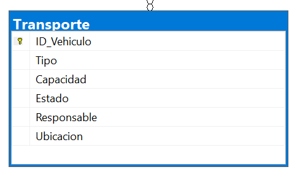

Imagen de la Tabla de Transporte

Pertinencia de la Arquitectura de la Base de Datos
La arquitectura de la base de datos de Transporte es pertinente porque organiza y centraliza la información de los vehículos y su estado. Esto facilita la administración de la flota, asegurando que los recursos estén disponibles y en condiciones para los proyectos.
Propósito
Su propósito es gestionar de forma eficiente los vehículos de transporte de materiales y maquinaria, incluyendo disponibilidad, estado y responsables asignados.
Campos de la Tabla
- ID_Vehiculo: Identificador único del vehículo.
- Tipo: Tipo de vehículo (camión, grúa, camioneta).
- Capacidad: Capacidad de carga.
- Estado: Condición actual (operativo, mantenimiento, fuera de servicio).
- Responsable: Persona encargada del vehículo.
- Ubicacion: Lugar donde se encuentra el vehículo.
Normalización
1NF:
Todos los valores son atómicos, sin listas en un solo campo.
2NF:
Todos los campos dependen de la clave primaria (ID_Vehiculo).
3NF:
No hay dependencias transitivas; información del responsable puede normalizarse en otra tabla.
Código SQL para Crear la Tabla
CREATE TABLE Transporte (
ID_Vehiculo INT PRIMARY KEY,
Tipo VARCHAR(50) NOT NULL,
Capacidad VARCHAR(50),
Estado VARCHAR(50),
Responsable VARCHAR(100),
Ubicacion VARCHAR(100)
);
Código SQL para Insertar Registros
INSERT INTO Transporte (ID_Vehiculo, Tipo, Capacidad, Estado, Responsable, Ubicacion)
VALUES
(1, 'Camión de volteo', '15 toneladas', 'Operativo', 'Juan Pérez', 'Patio 1'),
(2, 'Grúa', '20 toneladas', 'Mantenimiento', 'Carlos Ruiz', 'Taller'),
(3, 'Camioneta', '1.5 toneladas', 'Operativo', 'Luis García', 'Bodega A'),
(4, 'Tráiler', '30 toneladas', 'Operativo', 'María López', 'Patio 2'),
(5, 'Retroexcavadora', '10 toneladas', 'Fuera de servicio', 'José Hernández', 'Patio 3');
Registros de la Tabla
| ID_Vehiculo | Tipo | Capacidad | Estado | Responsable | Ubicación |
|---|---|---|---|---|---|
| 1 | Camión de volteo | 15 toneladas | Operativo | Juan Pérez | Patio 1 |
| 2 | Grúa | 20 toneladas | Mantenimiento | Carlos Ruiz | Taller |
| 3 | Camioneta | 1.5 toneladas | Operativo | Luis García | Bodega A |
| 4 | Tráiler | 30 toneladas | Operativo | María López | Patio 2 |
| 5 | Retroexcavadora | 10 toneladas | Fuera de servicio | José Hernández | Patio 3 |